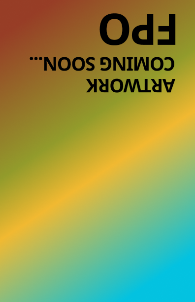
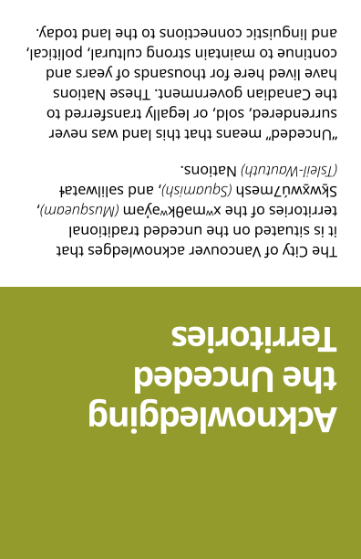
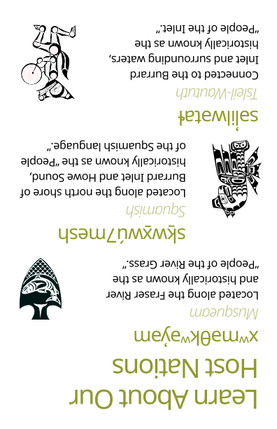
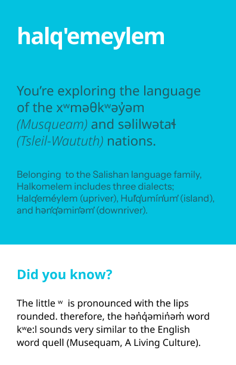
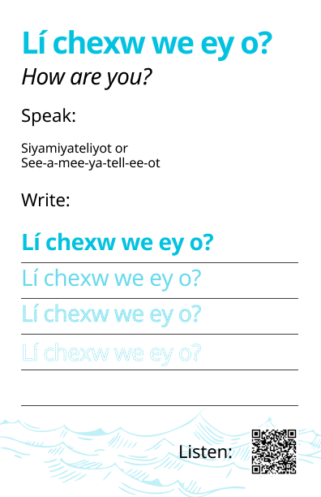
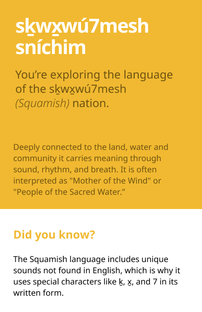
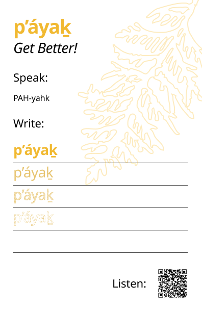
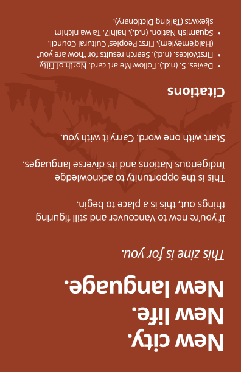

Project Overview
Language in the Landscape is a pocket zine exploring the relationship between Indigenous language and the natural landscape of British Columbia. Developed in collaboration with City Studio Vancouver through SFU's PUB 438 course, the project examines how place names carry history, identity and meaning that are often lost in translation.
The zine was designed to be accessible to a general public audience while honouring the gravity and significance of Indigenous language and place — balancing visual design with cultural respect and editorial clarity.
The Client
City Studio Vancouver is a partnership between the City of Vancouver and local post-secondary institutions that connects students with real civic challenges. Through City Studio, students collaborate with city staff and community partners to develop creative, research-driven solutions that contribute to public life in Vancouver.
This project was developed through SFU's PUB 438 course as part of the City Studio programme, giving it a real community context and a genuine audience beyond the classroom.
Problem Statement
Indigenous place names across British Columbia carry layers of meaning — ecological, cultural, spiritual and historical — that are invisible when only the colonial name is known. Most people who live and move through these landscapes have no access to the Indigenous languages that named them first.
How might we design a publication that makes Indigenous language and its relationship to landscape legible, approachable and meaningful to a general audience — without reducing or misrepresenting the communities it draws from?
Research Methodology
Research for this project focused on understanding the relationship between Indigenous language, land and identity through secondary sources, existing publications and editorial precedents. The goal was to develop enough context to approach the subject with care and accuracy, and to identify a visual and editorial language that felt respectful rather than extractive.
Key Findings & Insights
Research revealed that the most effective Indigenous language publications prioritize clarity and restraint — allowing the language and its meaning to lead, rather than imposing a heavy visual treatment. Accessibility for a general audience and cultural sensitivity are not in conflict: they both point toward the same design decisions.
Design Process
The design process began with editorial structure — deciding what content to include, how to sequence it and how to create a reading experience that felt intentional and unhurried. The pocket format was chosen deliberately: small enough to feel personal and portable, but substantial enough to communicate with depth.
Typography, whitespace and colour were selected to feel grounded and restrained, allowing the language and landscape content to breathe. Multiple layout iterations were explored before arriving at a grid system that balanced visual clarity with the weight of the subject matter.

Language in the Landscape — Zine Cover
Design Solution
The final zine uses a vibrant yet balanced colour palette inspired by natural elements — land, water and mountains — to symbolically connect Indigenous languages to their relationship with the environment. Each section is colour-coded to support navigation and cognitive ease, allowing users to move through the zine intuitively without prior knowledge.
The foldable format guides users step by step through acknowledgment, learning, reflection and the map — using simple conversation prompts, pronunciation guides and QR codes for optional audio support. The reflection section gives users space to write and engage personally, turning the zine into a participatory object rather than a passive one.

Indigenous Artist Artwork

Indigenous Land Acknowledgement

Host Nations Information

Halq'emeylem

Reading, Listening and Writing Halq'emeylem

Sḵwx̱wú7mesh Sníchim

Reading, Listening and Writing Sḵwx̱wú7mesh Sníchim

Vision of Zine
My Reflection
This project taught me that good design sometimes means stepping back and letting the content lead. Working with Indigenous subject matter as an international student designer required careful research, deliberate choices and a constant awareness that we were approaching knowledge that belongs to communities we are guests in. We were learners, not experts — and that framing shaped every decision we made.
We used trusted, Indigenous-led resources like FirstVoices throughout, and avoided using Indigenous culture for visual decoration. The ethical weight of the project made it one of the most meaningful things I have worked on — and it fundamentally changed how I think about the responsibility a designer holds when the subject is not theirs to own.